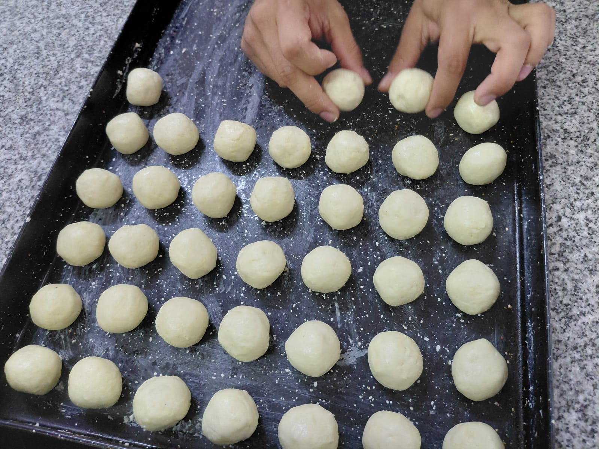

Evolución del aprendizaje
Se empieza desde cero con panadería básica y se avanza hacia la organización de buffets complejos y técnicas de cocción más avanzadas, a medida que pasan los años.
La orientación en Gastronomía del CFP N°4 combina práctica, creatividad y responsabilidad. Los estudiantes pasan de las técnicas básicas a preparaciones complejas.

Se empieza desde cero con panadería básica y se avanza hacia la organización de buffets complejos y técnicas de cocción más avanzadas, a medida que pasan los años.
Se aprende seguridad e higiene alimentaria. En una cocina profesional cada paso cuenta y la precisión es lo que garantiza el resultado.
La cocina es un espacio compartido. Ahí se desarrollan comunicación, liderazgo y convivencia, en un entorno parecido al laboral.
Cada estudiante personaliza sus presentaciones, diseños y sabores. Cocinar se vuelve una forma de expresar dedicación y estilo propio.
Profesores con experiencia guían de cerca sin hacer el trabajo por el estudiante, fomentando autonomía y confianza.
Abre puertas al mundo laboral, a la alta cocina o a un emprendimiento propio: aprendizajes que sirven para toda la vida.